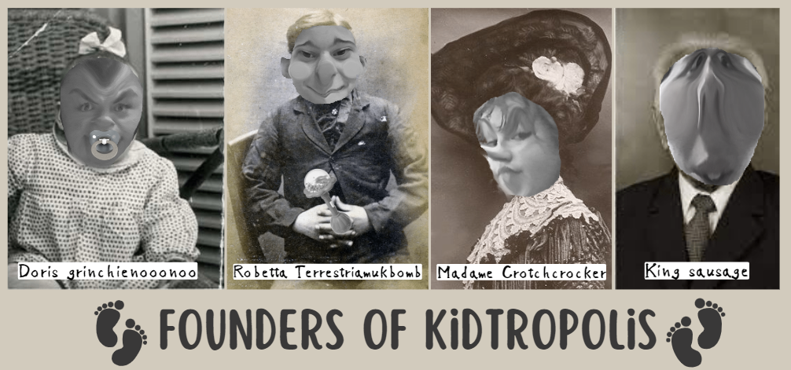

Origins of Kidtropolis!
In the 1800's after the founders had discovered Tenarvia. Kiddies became incredibly bored. Chasing innocent goats was just not fun anymore. Parents struggled to constantly entertain Kiddies. Parents, Madame Crotchcrocker & King Sausage had, had enough of this. They could not continue entertaining their son (Robetta Terrestriamukbomb) 24 hours a day. So...they thought long and hard, how on saturn? could they entertain kids and give all the parents in Tenarvia a break? Until...A child appeared. They were confused. Gobsmacked in fact. The child spoke, saying "Do not be afraid, My name is Doris Grinchienoonoo, I have a plan which answers all your worries." Madame Crotchcrocker & King Sausage looked at each other with hope in their eyes. Doris said "You shall create the city Kidtropolis, where kids like me can live and be entertained forever." Madame & King Sausage nodded and since then Kidtropolis has let kids be fufilled at last!

Kidtropolis in the past compared to today!
After the cities grand opening, Kidtropolis became well-known quickly, hundreds of families would travel to Kidtropolis for the weekend. Although back then, Kidtropolis was not the city it is today. 1825, was the year when Kiddies voted on allowing adults to live in Kidtropolis and become Kiddies. This increased the population and in 1850, 1 in 5 families of Tenarvia moved to Kidtropolis. Ballpit waterfalls were not even a thing back then, they were just ballpit but that didnt stop Kiddies from having a blast. Today, Kidtropolis is better than ever, Kiddies are always seen with a smile on their face and parents are even joining in on the fun at Kidtropolis. Kidtropolis is still growing and modern day technology is being added to entertain kiddies with roblox,minecraft, animal jam, club penguin and more!

Kidtropolis language
"Ga ga" is the language spoken in Kidtropolis. "Ga ga" orginated in 1815, Madame Crotchcrocker & King Sausage wanted to normalise baby 'talk' as a way therefore creating 'Ga ga'. 'Ga ga' is spoken all throughout Kidtropolis. You will often hear "Hewo, Goo ga ga and Noo noo!" which basically translates into Hello, hi, hey, etc. Some basic words in Ga ga are...Mama, Dada which means Mum and Dad. Poopoo means toilet, dont get that mixed up with the word poo. They're very different. Don't worry though, Ga ga may seem like a hard language to learn but our other national language is english, so do not fear. So what are you waiting, for head on to Kiddiolingo and learn the language of Ga ga!
Entertainment in the 1800s
Entertainment for Kiddies was rather percuilar than the entertainment Kiddies have now. Games played were classic games we still play today such as...follow the leader, tag, freeze tag, survivor, cops and robbers and so much more. Sport was also played but it was more dodgeball and benchball, usually fun games for all!

Audio reading for the origins of Kidtropolis, for those who want to listen!